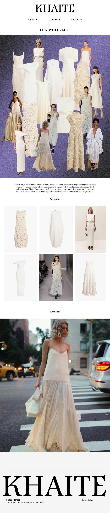

Product Shelf
Every project loads as a GLTF package in the WebGL scene. Click a product below or hover the 3D objects to rotate the shelf with GSAP.
About
Architectural training, real-time exhibition design, and a persistent habit of turning research into interactive systems.
Current Role
3D Interactive Exhibition Designer at Iconem, Paris, building navigable cultural heritage experiences from photogrammetry and point-cloud material.
Education
MFA Parsons and MEng AUTh. That mix shows up everywhere: spatial logic, visual systems, and experimental interfaces.
Point Of View
I like interfaces that feel handled, scanned, opened, and reassembled. The page itself is part archive, part product display, part real-time sketch.
Lab
Live sketches, shader studies, and narrative experiments.
Slit-Scan
p5.js time-as-texture experiment.
Shaders Week 02
Fragment shader study.
Mapping Time
Generative timeline visualization.
A Theft
Narrative interactive piece.
Memory Game
Playable autobiographical sketch.
Next
A small real-time archive viewer for scans, studies, and failed experiments worth keeping.
Wall
A small pinboard for visual scraps and side pieces.

Stack
The materials behind the work: capture, reconstruction, shaders, interfaces, and generative image systems.
Capture
- Photogrammetry pipelines
- Point cloud processing
- RealityCapture / Zephyr style workflows
Real-Time
- Unreal Engine
- Three.js / WebGL
- Unity · Blender · TouchDesigner
Code
- GLSL / HLSL
- JavaScript / React / Node
- Python · C# · p5.js
Contact
For exhibitions, interactive archives, product prototypes, or weird small worlds that need a point of view.